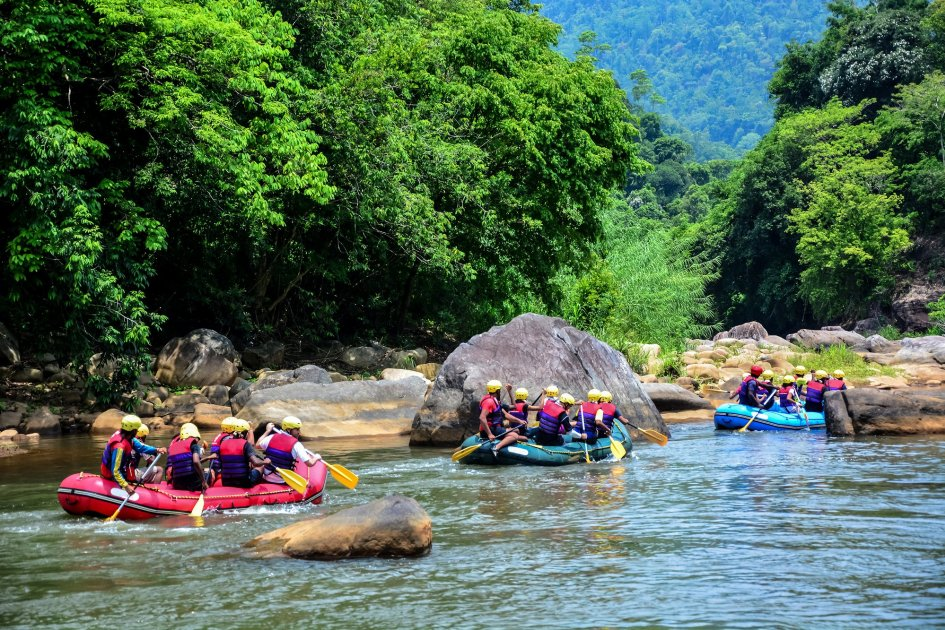
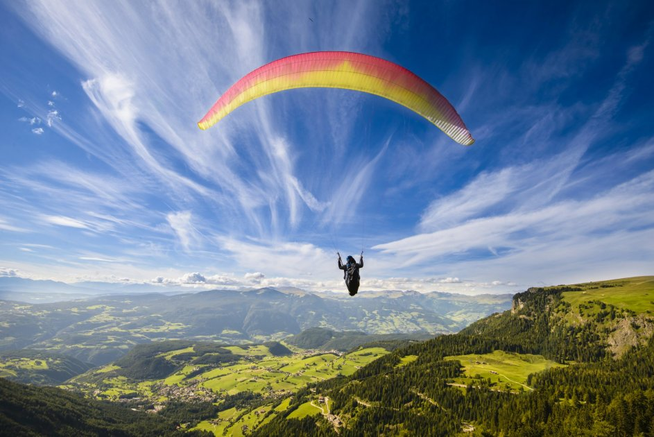

Лето – пора, от которой хочется получить максимум ярких эмоций и впечатлений.
Если привычные виды спорта тебя уже не впечатляют и ты в поисках экстрима и новых эмоций, отправляйся летать на воздушном шаре, сплавляться по горной реке или заниматься вейксерфингом. В этой статьей мы совместно с Киевстар составили для тебя подборку экстремальных видов спорта, доступных в Украине и мест, где ими можно заняться.
Прыжки с парашютом
Готов(-а) к захватывающему приключению для самых смелых? Абсолютная свобода полета, восторг от свободного падения, неподдельная радость и море адреналина. Свой первый прыжок с парашютом ты точно запомнишь на всю жизнь! Перед прыжками все обязательно проходят медицинский осмотр, инструктаж и подготовку, так что переживать не стоит – ты будешь под пристальным контролем профессионалов своего дела.
Существуют такие виды прыжков:
- в тандеме. Вы прыгаете с профессиональным инструктором (высота до 4200 м). Время полета под парашютом 3-5 минут;
- парашют типа «крыло». Самостоятельный прыжок с автоматически открывающимся парашютом и полностью управляемым куполом (высота до 1300 м);
- классический прыжок. Парашют круглый (высота – 800 м). Время полета под куполом 2-3 минуты.
Каждый парашютный центр устанавливает ограничения по возрасту, весу и состоянию здоровья, поэтому, на всякий случай, заранее уточни эти нюансы.
Где?
- Киев:
- Львов:Аэродром «Цунив»
- Одесса:
- Харьков: Аэроклуб им. В. Гризодубовой
- Чернигов: Авиационно-спортивный клуб (АСК)
- Днепр:
Сколько стоит?
Прыжок в тандеме – от 3500 грн, одиночный – от 1000 грн.
Рафтинг
Рафтинг сочетает в себе водный, горный и активный отдых. Этот вид экстрима обычно объединяют с экскурсионными турами и пешими походами. В Украине много маршрутов различной степени сложности для рафтинга на любой вкус и уровень физической подготовки.
Для сплава не требуется личное снаряжение – обычно, организаторы тура обеспечивают всем необходимым. Попробовать свои силы могут не только опытные экстремалы, но и новички и даже дети. Лучшее время для рафтинга – это конец апреля-май и все летние месяцы.
Где?
- Днестровский каньон: р. Днестр;
- Николаевская область: р. Южный Буг, сплав по Мигейским порогам;
- Карпаты: р. Черемош, р. Прут, р. Днестр.
Парапланеризм
Один из безопасных и простых способов подняться в небо – идеальный вариант для тех, кто мечтает парить в небе, как птица. Для полета не нужны особые умения и знания – необходимо лишь пройти краткий инструктаж и подготовку. Есть варианты одиночного и полета в тандеме с инструктором.
Где?
- Киев: Экстрим-клуб Sky-club, Аэро Киев;
- Харьков: Харьковский городской дельтапланерный клуб;
- Днепр, Запорожье: KAVA, клуб «7 Небо».
Цена – от 1300 грн.
Полет на воздушном шаре
Еще один способ безопасного подъема в небо. Его выбирают романтики, любители активного отдыха и приключений. Полеты доступны в теплое время года, лучше всего осуществлять подъем утром или в предвечернее время, когда потоки воздуха значительно слабее.
Где?
- Киев:
- Львов: Клуб воздухоплавания «Леофлай», Галицкое общество воздухоплавателей;
- множество городов Украины: Клуб воздухоплавательного спорта «Пилот».